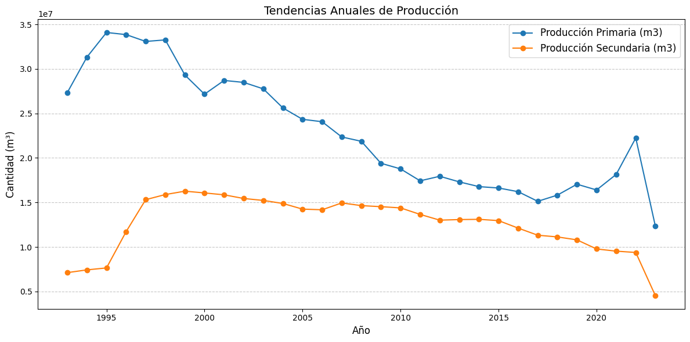

Tendencias Anuales de Producción
Descripción de los datos
Los datos del archivo pet.csv muestran las cantidades de producción anual en diversas categorías relacionadas con la industria petrolera. Las métricas seleccionadas para este análisis son:
- Producción Primaria (m³): Volumen de extracción directa de petróleo crudo.
- Producción Secundaria (m³): Cantidad recuperada mediante técnicas como inyección de agua o gas.
Gráfico de Tendencias
El siguiente gráfico ilustra cómo evolucionan las cantidades de las métricas seleccionadas a lo largo de los años:

Interpretación del gráfico
Las tendencias reflejan lo siguiente:
- Una posible disminución en la Producción Primaria, lo que podría indicar cambios en las reservas accesibles o en las técnicas utilizadas.
- Un aumento en la Producción Secundaria, lo que sugiere la creciente importancia de las técnicas de recuperación secundaria.